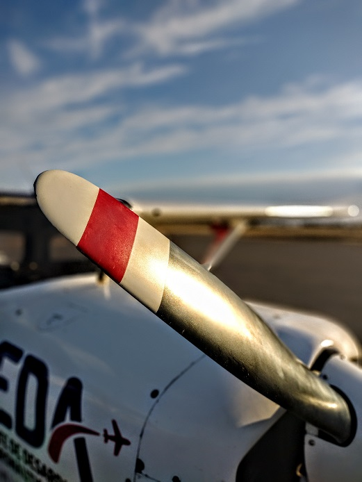

Cessna 152
Avión de propósito general, de ala alta y tren de aterrizaje fijo en triciclo, utilizado principalmente para entrenamiento, turismo y aviación privada.
Ver en WikipediaToda nuestra flota se encuentra Aeronavegable. Cuenta con todos los certificados y fue aprobada para las operaciones de instrucción según los requerimientos emitidos por la autoridad aeronáutica (ANAC)
| Aeronave | Autonomía | Velocidad crucero | Capacidad |
|---|---|---|---|
| Cessna 152 | 4h | 85 nudos | 2 personas |
| Cessna 172 | 4h | 95 nudos | 4 personas |
| Tecnam | 6h | 100 nudos | 2 personas |
Avión de propósito general, de ala alta y tren de aterrizaje fijo en triciclo, utilizado principalmente para entrenamiento, turismo y aviación privada.
Ver en WikipediaAvión monomotor de ala alta con capacidad para cuatro personas fabricado por la empresa Cessna. El Cessna 172 es el avión más fabricado de la historia y probablemente el avión de entrenamiento más popular del mundo.
Ver en WikipediaEl Tecnam P2002 Sierra es un avión monoplano de ala baja construido por Tecnam.
Ver en Wikipedia